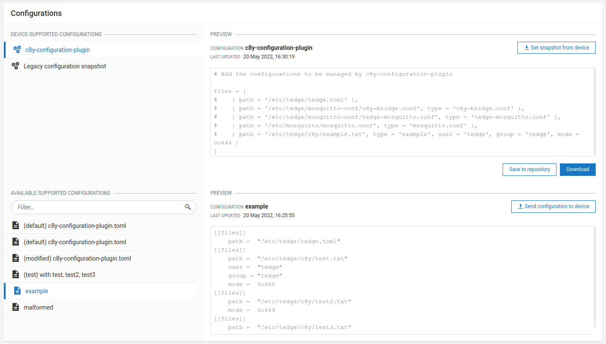

How to manage configuration files with Cumulocity
With thin-edge.io, you can manage config files on a device by using the Cumulocity configuration management feature as a part of Device Management.
If you are new to the Cumulocity Configuration Management feature, we recommend you to read the Cumulocity user guide along with this how-to guide.
Installation of c8y-configuration-plugin
To enable the feature, first you need to install the c8y-configuration-plugin binary on your device.
Using the get-thin-edge_io.sh script on Debian based distributions (Recommended)
If your device supports apt as a package manager,
you can install all thin-edge.io packages including the c8y-configuration-plugin by the get-thin-edge_io.sh script.
If you have already used the get-thin-edge_io.sh script,
this package is installed, by default.
curl -fsSL https://raw.githubusercontent.com/thin-edge/thin-edge.io/main/get-thin-edge_io.sh | sudo sh -s
Using the c8y-configuration-plugin Debian package on Debian based distributions
For Debian based distributions, we provide the c8y-configuration-plugin_<version>_<arch>.deb package as a release asset here.
In case that you didn't use the get-thin-edge_io.sh script, you can download the c8y-configuration-plugin_<version>_<arch>.deb package on our Releases and install it.
sudo apt install ./path/to/package/c8y-configuration-plugin_<version>_<arch>.deb
Extracting from debian package on non-Debian based distributions
Get the c8y-configuration-plugin_<version>_<arch>.deb from our Releases.
Then, run this command in the directory where the package is stored.
ar -x ./c8y-configuration-plugin_<version>_<arch>.deb | tar -xf ./data.tar.xz
The binary is extracted in <current directory>/usr/bin.
For more details, refer to our guide Extracting from debian package.
Building from sources
Follow our guide Building thin-edge.io and Building from source.
cargo build --release -p c8y-configuration-plugin
A systemd unit file for c8y-configuration-plugin can be found in the repository at configuration/init/systemd/c8y-configuration-plugin.service
and should be installed on the target in: /lib/systemd/system/c8y-configuration-plugin.service.
sudo cp <repository_root>/configuration/init/systemd/c8y-configuration-plugin.service /lib/systemd/system/c8y-configuration-plugin.service
Get started
Before starting anything, make sure your device is connected to Cumulocity.
Step 0
Unless you installed c8y-configuration-plugin using the debian package,
you need one additional step to initialize the plugin. Run this command.
sudo c8y-configuration-plugin --init
Step 1
Open the file /etc/tedge/c8y/c8y-configuration-plugin.toml and add entries for the configuration files that you'd like to manage from Cumulocity cloud in the following format:
files = [
{ path = '/etc/tedge/tedge.toml', type = 'tedge.toml'},
{ path = '/etc/tedge/mosquitto-conf/c8y-bridge.conf', type = 'c8y-bridge.conf' },
{ path = '/etc/tedge/mosquitto-conf/tedge-mosquitto.conf', type = 'tedge-mosquitto.conf' },
{ path = '/etc/mosquitto/mosquitto.conf', type = 'mosquitto.conf' },
{ path = '/etc/tedge/c8y/example.txt', type = 'example', user = 'tedge', group = 'tedge', mode = 0o444 }
]
pathis the full path to the configuration file.typeis a unique alias for each file entry which will be used to represent that file in Cumulocity UI.user,groupandmodeare UNIX file permission settings to be used to create a configuration file. If not provided, the files will be created withrootuser. If the file exists already, its ownership will be retained.
For more details on this configuration file format, refer to the reference guide.
Step 2
Start the configuration plugin process and enable it on boot by systemctl (recommended).
sudo systemctl start c8y-configuration-plugin.service
sudo systemctl enable c8y-configuration-plugin.service
Alternatively, you can run the process directly.
sudo c8y-configuration-plugin
Step 3
Navigate to your Cumulocity Device Management and the desired device. Open its Configuration tab.
You can find c8y-configuration-plugin and more are listed as supported configuration types, as declared in the plugin configuration file in step 1.

This is the configuration file of c8y-configuration-plugin, where you can add file entries that you want to manage with Cumulocity.
Update c8y-configuration-plugin from Cumulocity
To update any configuration file, create a local copy of that config file and then upload that file to the Cumulocity configuration repository with the appropriate configuration type.
The c8y-configuration-plugin.toml file can also be updated from the cloud in a similar manner to add/remove further configuration file entries. The updated TOML file has to be uploaded with the configuration type: c8y-configuration-plugin.
Then, go back to the Configuration tab of your desired device in Cumulocity.

Click on the config file entry from the DEVICE SUPPORTED CONFIGURATIONS files list. You can choose the file that you uploaded from the AVAILABLE SUPPORTED CONFIGURATIONS section, and then apply that file to your device by clicking on the Send configuration to device button.
After the operation created gets marked SUCCESSFUL, reload the page. Then you can find new supported configuration types as you defined.
All configuration updates are notified over tedge/configuration_change/<config-type> MQTT topic, giving the opportunity to software components installed on the device or a child device to react to these updates.
For more details, refer to the Notifications section of the specification.
To get to know more about the c8y-configuration-plugin, refer to Specifications of Device Configuration Management using Cumulocity.